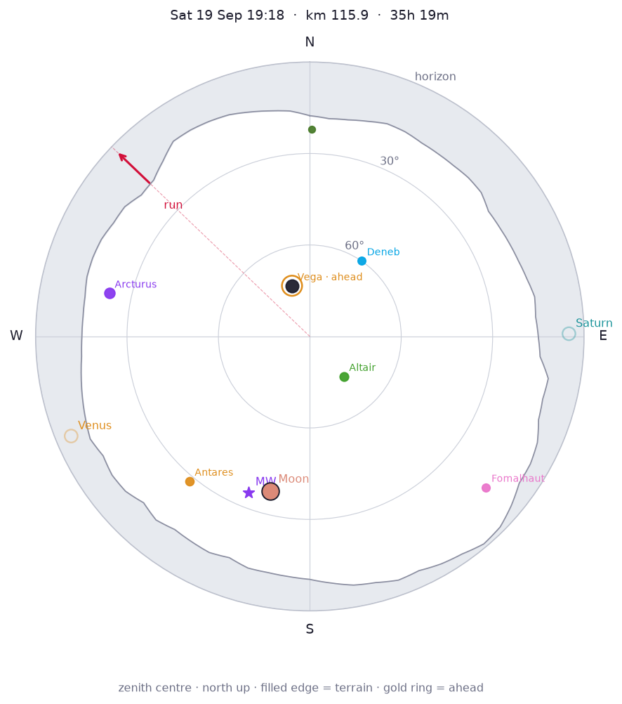
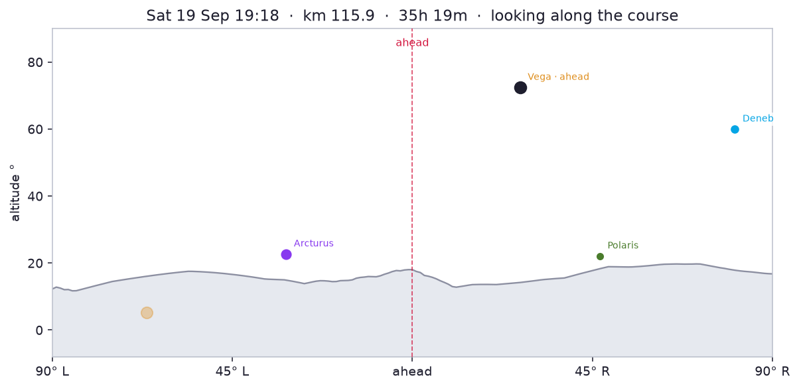

Sat 19 Sep 19:18 → Sun 20 Sep 04:37 (elapsed 35h 19m–44h 38m, km 152–157 at predicted pace)
Moon first quarter, 56% lit, 38° S (195°). Bright enough to wash out the Milky Way and faint constellations. Milky Way centre 35° S (202°). Overhead: Aquila, Cygnus, Lyra, Ophiuchus.


GLO-30 DSM looking up the GPX. The filled contour is the horizon; a star below it is behind terrain.
Best-scored stop: km 152 · Sat 19 Sep 19:18 · 1397 m.
Moon first quarter, 56% lit, 38° S (195°). Bright enough to wash out the Milky Way and faint constellations. Milky Way centre 35° S (202°). Overhead: Aquila, Cygnus, Lyra, Ophiuchus.
Moon first quarter, 57% lit, 32° SW (211°). Bright enough to wash out the Milky Way and faint constellations. Milky Way centre 27° SW (217°). Overhead: Aquila, Cygnus, Lyra, Pegasus.